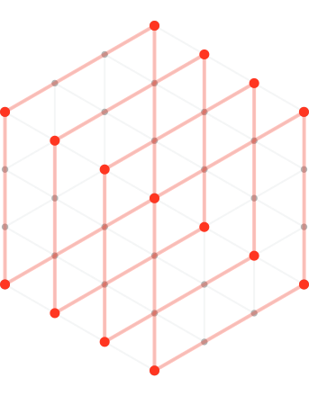
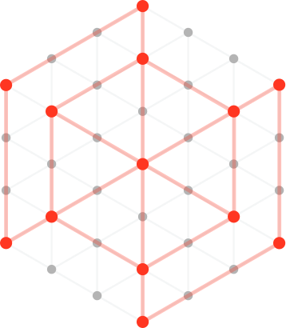

| Layer | Databricks technology | Role in Shelf Optimizer |
|---|---|---|
| Data foundation | Lakeflow, Delta Lake, Unity Catalog, SQL Warehouse | Build and serve stores, signals, planograms, lift assumptions, and sell-out |
| Multimodal AI | Foundation Model API serving endpoint | Use Llama 4 Maverick to identify brands and shelf blocks from images |
| Decision experience | Databricks Apps, AppKit, Genie | Deliver the field workflow and natural-language analysis |
| Operational loop | Lakebase, UC Volume, AI/BI Dashboard | Persist actions, govern shelf scenes, and track management outcomes |